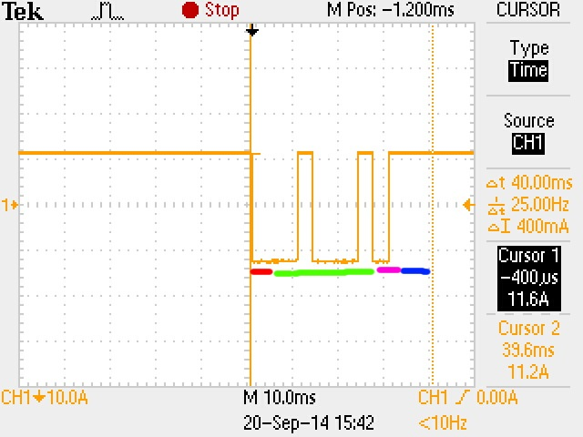
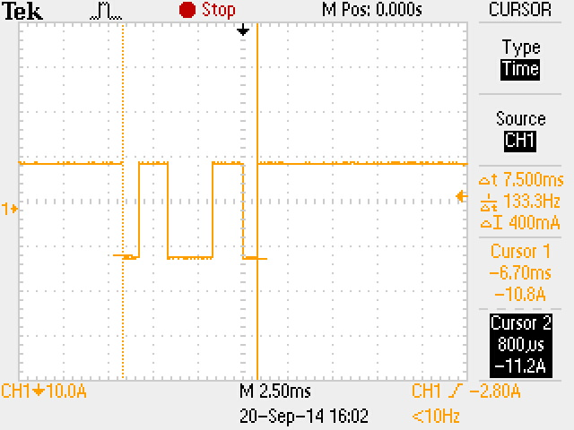
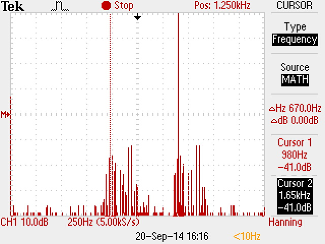
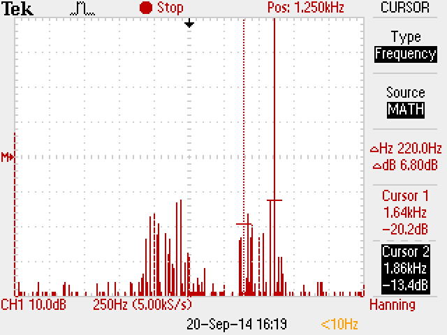

| Töö tegijate nimed: |
| Väino Kokk |
| Andrei Reinus |
| Töö tegemise kuupäev: Sat Sep 20 14:21:56 2014 |
| Liikme nimi | Andrei Reinus |
| Valitud sümbol | D |
| Sümboli ASCII kood | 0010001 |
| signaali "1" nivoo | -10.8 |
| signaali "0" nivoo | 10.4 |
| sümboli edastamiseks kulunud aeg | 40 |
| mitu bitti selle aja jooksul edastati | 11 |
| signaali pilt |  |
Legend:
punane - start-bitt
lilla - paarsusbitt
sinine - stopp-bitid
roheline - infobitid
| Seadistuse variant nr | 2 |
| Edastuskiirus | 1200 |
| Andmebittide arv | 7 |
| Paarsuskontroll | Paaris (even) |
| Stoppbittide arv | 2 |
| Voo juhtimine | Puudub (none) |
| Paarsuskontroll ja edastatava sümboli valik | Valitud sümbol ja sümboli ASCII kood | Sümboli edastamiseks kulunud aeg | Mitu bitti selle aja jooksul edastati |
| Even, sümbolis "1" arv paaris | c, 1100011 | 7.5ms | 9 |
|  | |||
|
Andmeedastust ei toimu, 2 kühmu sagedused |
980hz | 1.65khz |  |
||
|
Edastatakse mõlemalt poolt sümbolit @, 4 kühmu sagedused |
970hz | 1.18kHz | 1.64kHz | 1.86kHz |  |
| Võrrelda joonis 3 ja saadud katsetulemusi | Vahe on +-20Hz igas mõõtmispunktis | ||||
Vaja on edastada N = 111881 * 27 = 3020787 bitti informatsiooni.
Andmeedastus kiirus on 19200 bit / s
Andmebitte: 8
Paarsuskontroll: paaritu
Stopbitte: 2
Edastatavate pakettide arv: N / 8 = 3020787 / 8 = 377598.375;
Kuna täpselt ei jagu siis tuleb üks pakett lisaks ning kokku on vaja edastada 377599 paketti.
Ühe paketti edastamiseks kulub, 1 startbit + 8 databitti + 1 paarsusbitt + 2 stopbit = 12 bitti
Edastusbitte tuleb kokku siis 377599 * 12 = 4531188 bitti
Aeg = 4531188 / 19200 = 235,999375 sekundit